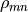
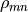

Quasi-Probabilities¶
Module of functions to calculate quasi-probability distributions (adapted from qutip).
Functions¶
Wigner : An iterative method to evaluate the Wigner functions for the Fock state.
HusimiQ : Q-function of a given state vector or density matrix at points vec + i * vec._qfuncPure : Calculate the Q-function for a pure state.
Types¶
Matrix : Union of (scipy) sparse and (numpy) arrayndOrListInt : Union of ndarray and intList
-
Wigner(rho: Matrix, vec: Union[numpy.ndarray, list], g: float = 1.4142135623730951) → numpy.ndarray[source]¶ An iterative method to evaluate the Wigner functions for the states
.The Wigner function is calculated as
 where
where  is the Wigner
function for the density matrix .
is the Wigner
function for the density matrix .In this implementation, for each row m, Wlist contains the Wigner functions Wlist =
![[0, ..., W_{mm} , ..., W_{mN} ]](../../_images/math/3aed6f14664ed56a4ea56f1f5354b3d55204ebc3.png) . As soon as one Wigner function is
calculated, the corresponding contribution is added to the total Wigner
function, weighted by the corresponding element in the density matrix
.
. As soon as one Wigner function is
calculated, the corresponding contribution is added to the total Wigner
function, weighted by the corresponding element in the density matrix
.- Parameters
rho (Matrix) – Density matrix or ket state.
vec (ndOrList) – An array (or list) to define the (coarse-grained) Phase space. This creates a square grid of the phase space.
g (float) – Scaling factor for a = 0.5 * g * (x + iy), default g = sqrt(2).
- Returns
Values representing the Wigner-function calculated over the specified range [vec, vec].
- Return type
returns : ndarray
-
HusimiQ(state: Matrix, vec: Union[numpy.ndarray, list], g: float = 1.4142135623730951) → numpy.ndarray[source]¶ Q-function of a given state vector or density matrix at points vec + i * vec
- Parameters
rho (Matrix) – density matrix or ket state
vec (ndOrList) – An array (or list) to define the (coarse-grained) Phase space. This creates a square grid of the phase space.
g (float) – Scaling factor for a = 0.5 * g * (x + iy), default g = sqrt(2).
- Returns
Values representing the Q-function calculated over the specified range [vec, vec].
- Return type
returns : array
-
_qfuncPure(psi: Matrix, alphaMat: numpy.ndarray) → numpy.ndarray[source]¶ Calculates the Q-function for a pure state.
- Parameters
psi (Matrix) – a pure state
vec (ndOrList) – an array (or list) to define the (coarse-grained) Phase space. This creates a square grid of the phase space.
g (float) – Scaling factor for a = 0.5 * g * (x + iy), default g = sqrt(2).
- Returns
Values representing the Q-function calculated over the specified range [vec, vec].
- Return type
returns : array